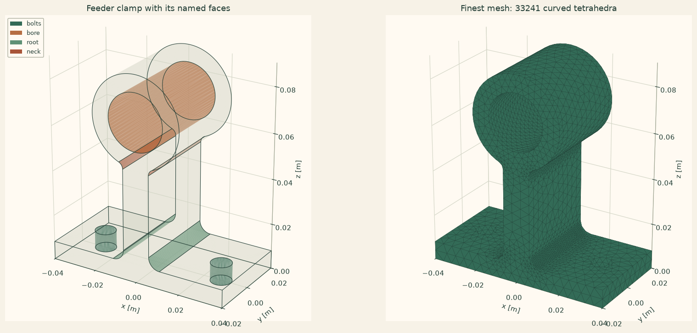

Docs › Examples › Deformation of a feeder clamp
Structural mechanics · 3D
Deformation of a feeder clamp
An aluminium clamp holds a high-frequency feeder line: how far the feeder seat moves and tilts under the pull of the line, and where the clamp is most stressed.

What it computes
OneSimulation reads the clamp with its named bolt, bore and fillet faces from a STEP file, meshes it with curved quadratic tetrahedra refined in the fillets and solves 3D linear elasticity with a bearing pressure in the bore and fixed bolt holes on three meshes. The script that builds the STEP file comes with the notebook.
What it checks
The reactions in the bolts and on the mounting balance the feeder force exactly, (-300, -600, 200) N; the tilt of the feeder axis converges to 365.0 µrad (0.012 % change between the two finest meshes, Richardson-extrapolated 365.00 µrad), the seat shifts by (63.1, 19.5, 0.7) µm, and the peak stresses of 38.7 MPa in the root fillets and 17.3 MPa in the neck fillets change by about 3 % between the two finest meshes.
Geometry
The notebook starts at the import of the CAD file feeder_clamp_deformation.step: STEP (AP242), readable by any CAD program, with the names of the faces that the boundary conditions use. Put it next to the notebook.

The geometry script
The script feeder_clamp_deformation_geometry.py builds the geometry with the CAD objects of OneSimulation and writes the file. Change a dimension there, run it, and run the notebook again.
"""Geometry of the OneSimulation example "Deformation of a feeder clamp".
Builds the aluminium clamp (base plate with two bolt holes, upright web with fillets at its root
and at its neck, and an eye that carries the feeder) with the CAD objects of OneSimulation, names
the faces the simulation refers to and writes feeder_clamp_deformation.step.
"""
import numpy as np
from onesim.cad.d3 import AnnularCylinder, Box, UnionFromObjects
base_length, depth, plate, web, axis_height, outer, bore = 0.080, 0.040, 0.008, 0.012, 0.070, 0.020, 0.0125
base = Box(length=base_length, width=depth, height=plate, origin=(-base_length / 2, -depth / 2, 0.0))
upright = Box(length=web, width=depth, height=axis_height - outer + 0.004 - plate, origin=(-web / 2, -depth / 2, plate))
eye = AnnularCylinder(inner_radius=bore, outer_radius=outer, length=depth, origin=(0.0, 0.0, 0.0)) \
.rotated((1, 0, 0), -np.pi / 2).moved((0.0, -depth / 2, axis_height))
clamp = UnionFromObjects(objects=[base, upright, eye])
clamp = clamp.fillet(0.005, edges=clamp.select(edges=lambda edge: abs(edge.start[2] - plate) < 1e-9 and abs(edge.end[2] - plate) < 1e-9
and abs(abs(edge.start[0]) - web / 2) < 1e-9 and abs(edge.start[0] - edge.end[0]) < 1e-9))
clamp = clamp.fillet(0.003, edges=clamp.select(edges=lambda edge: 0.045 < edge.start[2] < 0.06 and abs(edge.start[2] - edge.end[2]) < 1e-9
and abs(abs(edge.start[0]) - web / 2) < 1e-9 and abs(edge.start[0] - edge.end[0]) < 1e-9))
clamp = clamp.hole(0.009, at=(-0.028, 0.0, plate)).hole(0.009, at=(0.028, 0.0, plate))
faces = clamp.boundaries
clamp = clamp.grouped(
bolts=faces["hole.outer_wall"] | faces["hole_2.outer_wall"],
bore=clamp.select(faces=lambda face: face.kind == "cylinder" and abs(face.radius - bore) < 1e-9),
root=clamp.select(faces=lambda face: face.kind == "cylinder" and abs(face.radius - 0.005) < 1e-9),
neck=clamp.select(faces=lambda face: face.kind == "cylinder" and abs(face.radius - 0.003) < 1e-9),
)
clamp.save("feeder_clamp_deformation.step")The notebook
The complete notebook, cell by cell. Run it to produce the figures and the comparison printout.
A feeder carrying high-frequency power must run as straight as possible: any kink changes its impedance. It is held every few metres by clamps like this one, a base plate bolted to the mounting, an upright web, and an eye of 25 mm bore in which the feeder sits. The feeder pulls on the eye: its weight, a sideways pull of the line and a pull along the line that the eye takes by friction,
The clamp comes from the CAD file feeder_clamp_deformation.step with four named face groups: bolts, bore, root and neck. The script feeder_clamp_deformation_geometry.py builds the part with the CAD objects of OneSimulation and writes the file.
| face | condition | |---|---| | bolts: walls of the two bolt holes | \(\mathbf u=0\) | | bottom of the base plate | rests on the mounting, \(u_z=0\) | | bore: seat of the feeder | bearing pressure \(p_{max}\cos\varphi\) towards \((F_x,F_z)\), uniform shear \(F_y/A\) | | all other faces | traction free |
The quantities that matter for the feeder are the displacement of the seat and its tilt: the rotation of the bore axis, which bends the feeder where it leaves the clamp.
Reference. The reaction in the bolts and on the mounting must balance \(\mathbf F\) (global equilibrium). The tilt and the peak stresses in the root and neck fillets have no closed form; a mesh study on three meshes shows how far they are converged, with Richardson extrapolation of the tilt.
import numpy as np
from onesim.cad.d2 import Plane
from onesim.cad.exchange import load
from onesim.materials import IsotropicSolid
from onesim.meshing import LocalRefinement, TetrahedralMesher
from onesim.numerics import Numerics
from onesim.numerics.fem import FiniteElement, Lagrange
from onesim.numerics.linear import SparseDirect
from onesim.physics.solid_mechanics import FixedDisplacement, FixedDisplacementComponents, LinearElasticity, Traction, TractionFree
from onesim.results.comparisons import convergence
from onesim.simulation import Problem, Simulation
from onesim.visualization import theme, plots
theme.set()Geometry and mesh
load returns the solid with its named face groups in clamp.boundaries. Three meshes of curved quadratic tetrahedra differ in the cell size on the fillets; the bore gets 2 mm cells, the rest 4 mm.
clamp = load("feeder_clamp_deformation.step")
faces = clamp.boundaries
bottom = clamp.select(faces=lambda face: abs(face.center[2]) < 1e-9)
sizes = [0.0016, 0.0011, 0.00075]
meshes = [TetrahedralMesher(target_size=0.004, geometry_order=2, refinements=(
LocalRefinement(region=faces.bore, target_size=0.002),
LocalRefinement(region=faces.root | faces.neck, target_size=size))).generate(clamp) for size in sizes]
view = plots.Camera(elevation=24, azimuth=-58)
fig = plots.figure(1, 2, size=(15, 6.5))
plots.geometry(clamp, selection={"bolts": faces.bolts, "bore": faces.bore, "root": faces.root, "neck": faces.neck},
labels=False, camera=view, title="Feeder clamp with its named faces", ax=fig[0])
plots.mesh(meshes[-1], groups=("all",), legend=False, camera=view, title=f"Finest mesh: {meshes[-1].cell_count} curved tetrahedra",
ax=fig[1])
plots.show()Model
Aluminium alloy 6061-T6. On the bore, the radial part of the feeder force presses as a cosine bearing pressure on the half facing \((F_x,F_z)\), with \(p_{max}=2F_{xz}/(\pi r L)\); the axial part is a uniform shear.
force, axis, radius, depth = np.array([300.0, 600.0, -200.0]), np.array([0.0, 0.070]), 0.0125, 0.040
aluminium = IsotropicSolid(density=2700.0, specific_heat_capacity=896.0, thermal_conductivity=167.0,
youngs_modulus=68.9e9, poisson_ratio=0.33, thermal_expansion_coefficient=23.6e-6)
radial = np.hypot(force[0], force[2])
def seat(x, y, z):
"""Traction of the feeder on the bore: bearing pressure plus axial shear."""
nx, nz = (np.asarray(x) - axis[0]) / radius, (np.asarray(z) - axis[1]) / radius
pressure = 2 * radial / (np.pi * radius * depth) * np.maximum((nx * force[0] + nz * force[2]) / radial, 0.0)
return np.stack((pressure * nx, np.full_like(nx, force[1] / (2 * np.pi * radius * depth)), pressure * nz), axis=-1)
model = LinearElasticity(domain=clamp.volume, material=aluminium)
problem = Problem(name="Feeder clamp", geometry=clamp, physics=(model,), boundary_conditions=(
FixedDisplacement(boundary=faces.bolts, physics=model, value=(0.0, 0.0, 0.0)),
FixedDisplacementComponents(boundary=bottom, physics=model, components=("z",)),
Traction(boundary=faces.bore, physics=model, value=seat),
TractionFree(boundary=faces.all - faces.bolts - bottom - faces.bore, physics=model)))
numerics = Numerics(spatial=FiniteElement(element=Lagrange(order=2)), linear_solver=SparseDirect())
results = [Simulation(problem=problem, mesh=mesh, numerics=numerics).solve_stationary() for mesh in meshes]
displacement, mises = (results[-1].field(f) for f in (model.displacement, model.von_mises_stress))Results
The motion of the seat follows from the displacement on the bore: its mean is the shift of the feeder axis, the slope of \(u_x\) and \(u_z\) along the bore its tilt.
seats = [result.field(model.displacement).sample(along=faces.bore, subdivisions=3) for result in results]
shift = [s.values.mean(axis=0) for s in seats]
tilt = [np.hypot(np.polyfit(s.positions[:, 1], s.values[:, 0], 1)[0], np.polyfit(s.positions[:, 1], s.values[:, 2], 1)[0]) for s in seats]
peaks = {name: [result.field(model.von_mises_stress).sample(along=group, subdivisions=3).values.max() for result in results]
for name, group in (("root", faces.root), ("neck", faces.neck))}
studies = {"tilt": convergence(tilt, sizes), **{name: convergence(values, sizes) for name, values in peaks.items()}}
reaction = displacement.reaction(faces.bolts | bottom)
print(f"reaction of bolts and mounting: ({reaction[0]:.1f}, {reaction[1]:.1f}, {reaction[2]:.1f}) N "
f"against the feeder force ({force[0]:.0f}, {force[1]:.0f}, {force[2]:.0f}) N")
print(f"shift of the feeder axis: ({1e6 * shift[-1][0]:.2f}, {1e6 * shift[-1][1]:.2f}, {1e6 * shift[-1][2]:.2f}) µm")
print("fillet cell size [mm] tetrahedra tilt [µrad] peak stress root [MPa] peak stress neck [MPa]")
for size, mesh, t, root, neck in zip(sizes, meshes, tilt, peaks["root"], peaks["neck"]):
print(f"{1e3 * size:19.2f} {mesh.cell_count:11d} {1e6 * t:12.2f} {root / 1e6:23.2f} {neck / 1e6:23.2f}")
print(f"tilt: change between the two finest meshes {100 * studies['tilt'].change:.3f} %, "
f"observed order {studies['tilt'].order:.1f}, extrapolated {1e6 * studies['tilt'].extrapolated:.2f} µrad")
for name in peaks:
print(f"peak stress in the {name} fillets: change between the two finest meshes {100 * studies[name].change:+.1f} %")Figure
The von Mises stress on the deformed clamp (displacement magnified 300 times) and in the mid-plane of the web, and the mesh study of the tilt and of the two fillet peaks.
megapascal = lambda s, position: s / 1e6
fig = plots.figure(2, 2, size=(15, 12))
plots.surface(mises, component=megapascal, deformation=displacement, deformation_scale=300.0, limits=(0, 12), camera=view,
label="von Mises stress [MPa]", title="Deformed clamp (×300)", ax=fig[0])
plots.section(mises, plane=Plane(origin=(0, 0, 0), normal=(0, 1, 0)), component=megapascal, limits=(0, 12), subdivisions=3,
label="von Mises stress [MPa]", title="Mid-plane y = 0", ax=fig[1])
plots.line(1e3 * np.array(sizes), {"simulation": 1e6 * np.array(tilt)}, markers=True,
hlines={"extrapolated": 1e6 * studies["tilt"].extrapolated},
xlabel="cell size in the fillets [mm]", ylabel="tilt of the feeder axis [µrad]", title="Mesh study: tilt", ax=fig[2])
plots.line(1e3 * np.array(sizes), {f"{name} fillets": np.array(values) / 1e6 for name, values in peaks.items()}, markers=True,
ylimits=(0, 45), xlabel="cell size in the fillets [mm]", ylabel="peak von Mises stress [MPa]", title="Mesh study: fillet peaks", ax=fig[3])
plots.show()Going further
Make the web thicker or the root fillet larger in feeder_clamp_deformation_geometry.py, write the STEP file again and follow the tilt; or let the base plate lift off the mounting with frictional contact (onesim.physics.solid_mechanics).